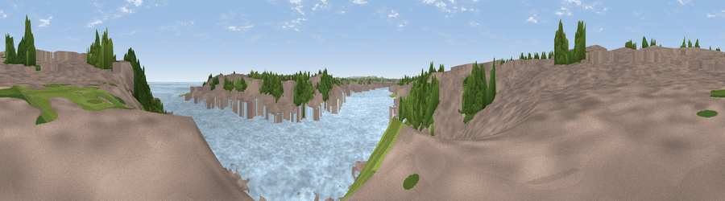

Viewpoint near North Shields
#41183 in England · top 83% of its area beats it · near North ShieldsWhere it is
The exact computed spot (NZ 35790 68228). Click the marker for map links.
The view, rendered

A 360° render of this exact spot computed from the terrain model, tree cover and land cover — summer colours, afternoon light, calibrated against photographs of famous viewpoints. Real trees, hedges and buildings will differ in detail.
The panorama
Grey silhouette: terrain skyline in each direction (720 bearings, Earth curvature and refraction included). Dashed green: skyline with trees (+15 m) and buildings (+8 m) as obstacles. Blue strip: how far the ground is visible on each bearing.
Where the view opens
Wedge length = distance to the farthest visible ground on that bearing (vegetation-aware). Rings at 10, 25 and 50 km.
What fills the view
52% water · 37% built-up · 10% woodland · 2% grassland
Angular shares of the visible panorama (visual magnitude), not map area. Landscape diversity 0.44 (0–1 Shannon).
Key numbers
More beautiful places nearby
The staircase of upgrades: each row has a higher view potential than everything closer. Driving times are estimates from straight-line distance, calibrated against real road routing — check an actual route before setting out.
| Place | Direction | Drive | Score |
|---|---|---|---|
| Viewpoint near Tynemouth | NE · 2 km | ~5 min | 59.0 |
| Viewpoint near Whitburn | SE · 5 km | ~12 min | 67.3 |
| White Hill | SW · 11 km | ~21 min | 69.8 |
| Penshaw Hill | S · 14 km | ~25 min | 75.1 |
| Viewpoint near Sunniside | SW · 17 km | ~30 min | 77.6 |
| Pontop Pike | SW · 26 km | ~42 min | 77.8 |
| Viewpoint near Longframlington | NW · 43 km | ~62 min | 79.5 |
| Viewpoint near Rothbury | NW · 44 km | ~64 min | 81.1 |
55.00734, -1.44195 · source: osm viewpoint · position refined by local search. Computed location — check access rights before visiting.